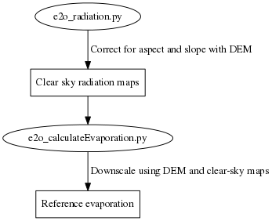
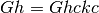
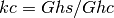
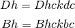
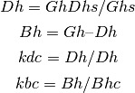

In general evaporation amounts are determined for about 90% by radiation input. Radiation at the earth’s surface is determined by the potential solar radiation at the edge of the earths atmosphere and the filtering within the atmosphere. The first component can be easily determined from equations. The reduction due to clouds etc can be estimated by incorporation short wave measurements but if these are not available cloud cover estimates can also be used. By combining this with a DEM radiation at the earths surface can be determined including the effects of aspect and shading.
The figure below shows the steps used to generated down-scale reference evaporation.

The .ini file below shows the available options
[url]
# Server location and location of the WRR forcing
serverroot = http://wci.earth2observe.eu/thredds/dodsC/
wrrsetroot = ecmwf/met_forcing_v0/
# What to do
[selection]
# Choose one of the three methods below
evapMethod = PenmanMonteith
#evapMethod = Hargreaves
#evapMethod = PriestleyTaylor
# Resampling = True -> resample to resolution of dEM specified in downscaling section
# Downscaling = True -> also apply DEM based correctiosn of T, Radiation, Pressure
resampling = True
downscaling = True
# Specifye box to download from server. Should be a bit bigger that the DEM
latmin = -90
latmax = +90
lonmin = -180
lonmax = 180
# Start and end-year, month and day of the evaporation calculations
startyear = 1979
endyear= 2012
startmonth = 1
endmonth = 12
startday = 1
endday = 31
[downscaling]
# Wher to fine the output of the e2o_radiation script
radcordir=output_rad
# location of original DEM (WFDEI) and the local high resolution DEM
highResDEM=highresdem\DEM.tif
lowResDEM=lowresdem\dem.tif
[output]
# Gdal output format string
# See: http://www.gdal.org/formats_list.html
# examples: AAIGrid, PCRaster, GTiff etc
format= GTiff
directory=output/
prefix=PET
# Is saveall is true all variables used are saved instead of only the PET
saveall=1
The file can be downloaded here: here.
The paragraph below is adapted from the r.sun grass manual:
The real-sky irradiance/irradiation are calculated from clear-sky raster maps by the application of a factor parameterizing the attenuation of cloud cover. Examples of explicit calculations of this parameter can be found in Becker (2001), Kitler and Mikler (1986). However, the cloudiness observation by a meteorological service routine is usually prone to subjective errors and does not describe sufficiently the physical nature and dynamic spatial-temporal pattern of different types of cloud cover. Therefore, a simpler parameter has to be used. The solutions for horizontal and inclined surfaces are slightly different. For the assessment of global irradiance/irradiation on a horizontal surface under overcast conditions Gh the clear-sky values Ghc are multiplied by clear-sky index kc (Beyer et al 1996, Hammer et al 1998, Rigollier et al. 2001):

The index kc represents the atmospheric transmission expressed as a ratio between horizontal global radiation under overcast and clear-sky conditions. For a set of ground meteorological stations the clear-sky index can be calculated from measured global radiation Ghs and computed values of clear-sky global radiation Ghc:

As an alternative the kc can be derived also from other climatologic data (e.g. cloudiness, cf. Kasten and Czeplak 1980). The raster maps of kc must be then derived by spatial interpolation. The kc can be calculated directly as a raster map from short-wave surface irradiance measured by satellites. This method is based on the complementarity between the planetary albedo recorded by the radiometer and the surface radiant flux (Cano et al 1986, Beyer et al 1996, Hammer et al 1998). To compute the overcast global irradiance/irradiation for inclined surfaces, Gi the diffuse Dh and beam Bh components of overcast global radiation and of the clear-sky index kc have to be treated separately as follows from the following equations:

The ratio of diffuse to the global radiation Dh/Gh for clear and overcast skies changes according to the cloudiness. In Europe the Dh/Gh values are typically in interval 0.3-1.0 (Kasten and Czeplak 1980). The underlying physical processes are quite complicated and computationally represented only by empirical equations (cf. Scharmer and Greif, 2000, Kasten and Czeplak 1980, Hrvoľ 1991). However, for many meteorological stations, besides the global horizontal radiation Ghs, the diffuse component Dhs is either measured or calculated from cloudiness, sunshine or other climatologic data. The raster map of Dhs/Ghs can be derived from the point values by spatial interpolation. Consecutively, the raster maps of diffuse and beam components of the clear sky index can be computed:

where subscript s is meant to distinguish data measured on meteorological stations Bhs nd Dhs from the estimated values Bh, and Dh.
Temperature is downscaled using a fixed laps-rate.
Pressure is downscaled .... PM
Determine downscaled reference evaporation from the eartH2Observe WFDEI forcing
usage:
e2o_calculateEvaporation.py -I inifile
-I inifile - ini file with settings which data to get
| Parameters: |
|
|---|---|
| Returns: |
relevantDataFields : [‘Temperature’,’DownwellingLongWaveRadiation’,’SurfaceAtmosphericPressure’, ‘NearSurfaceSpecificHumidity’,’SurfaceIncidentShortwaveRadiation’,’NearSurfaceWindSpeed’]
relevantDataFields : [‘Temperature’,’DownwellingLongWaveRadiation’,’SurfaceAtmosphericPressure’, ‘NearSurfaceSpecificHumidity’,’SurfaceIncidentShortwaveRadiation’,’NearSurfaceWindSpeed’]
Correction of air pressure for DEM based altitude correction based on barometric formula
| Parameters: |
|
|---|---|
| Returns: | corrected pressure |
relevantDataFields : [‘Temperature’,’DownwellingLongWaveRadiation’,’SurfaceAtmosphericPressure’, ‘NearSurfaceSpecificHumidity’,’SurfaceIncidentShortwaveRadiation’,’NearSurfaceWindSpeed’]
Corrects incoming radiation using the information from the e2o_radiation module
| Parameters: |
|
|---|---|
| Returns: | corrected incoming radiation |
generate a dictionary with date/times and the NC files in which the data resides for flexible timestep
generate a dictionary with date/times and the NC files in which the data resides
generate a pcraster type mapname based on timestep and prefix :var number: number of the mape :var prefix: prefix for the map
| Returns: | Name |
|---|
class to get data from a set of NC files for user defined timestep in seconds Initialise with a list of netcdf files and a variable name (standard_name)
Does not work yet
class to get data from a set of NC files Initialise with a list of netcdf files and a variable name (standard_name)
Does not work yet
Does not work yet
Wrapper around the nc object to simplify things
Opens the dataset and determines the number of dimensions 3 = T, Lat Lon 4 = T heigth, Lat Lon
Read geographical file into memory
| Parameters: |
|
|---|---|
| Returns: | resampled map |
| Parameters: |
|
|---|---|
| Returns: | elevationcorrection, hiresdem, upscaled_lowresdem |